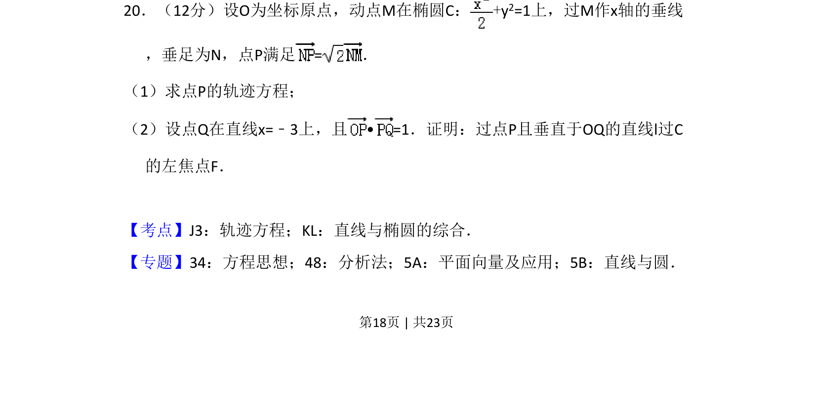
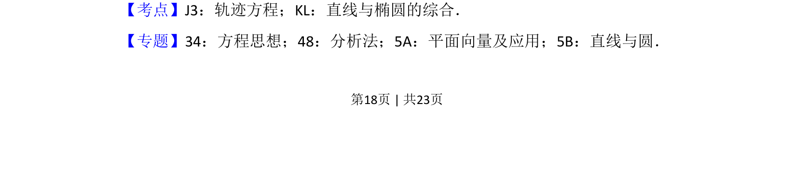
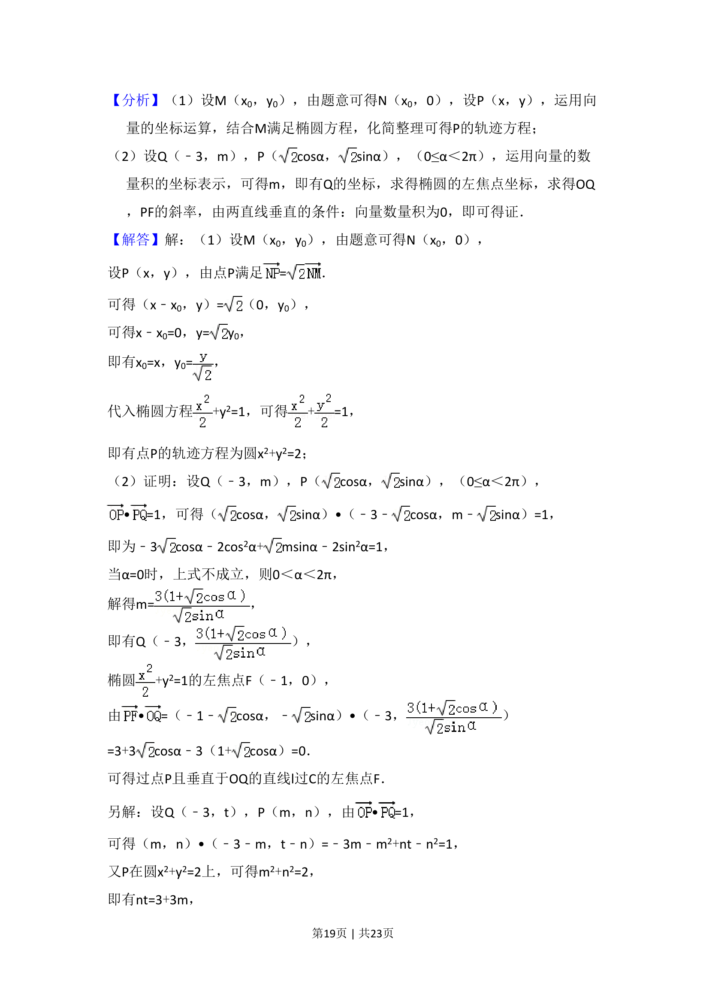
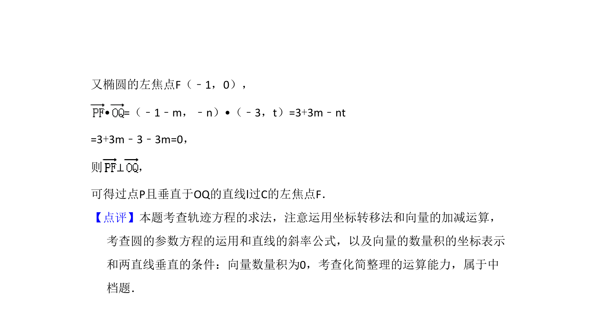

考点：轨迹方程 直线与椭圆综合 平面向量数量积

第（1）问求点P的轨迹方程，第（2）问综合向量垂直与直线过定点证明。



📄 原 PDF 第 18 页：
素材/真题/吉林/2008-2024·（吉林）数学高考真题/2017年高考数学试卷（理）（新课标Ⅱ）（解析卷）.pdf
20．（12分）设O为坐标原点，动点M在椭圆C：+y 2=1上，过M作x轴的垂线 ，垂足为N，点P满足=． （1）求点P的轨迹方程； （2）设点Q在直线x=﹣3上，且• =1．证明：过点P且垂直于OQ的直线l过C 的左焦点F．
【考点】J3：轨迹方程；KL：直线与椭圆的综合．菁优网版权所有 【专题】34：方程思想；48：分析法；5A：平面向量及应用；5B：直线与圆．